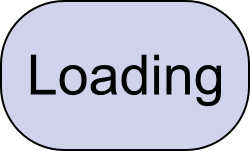

Splash screens are useful when your applications has to do some time-consuming work to start-up properly (load 'heavy' libraries, connect to a DB or a socket, create a complex state from configuration files, etc.)
Qt has the QSplashScreen class to make splash screens trivial to create and manage. This class is very simply used from PyQt. Here's how:
"""
Splash screen example
Eli Bendersky (eliben@gmail.com)
License: this code is in the public domain
Last modified: 09.05.2009
"""
from PyQt4.QtCore import *
from PyQt4.QtGui import *
class Form(QDialog):
""" Just a simple dialog with a couple of widgets
"""
def __init__(self, parent=None):
super(Form, self).__init__(parent)
self.browser = QTextBrowser()
self.setWindowTitle('Just a dialog')
self.lineedit = QLineEdit("Write something and press Enter")
self.lineedit.selectAll()
layout = QVBoxLayout()
layout.addWidget(self.browser)
layout.addWidget(self.lineedit)
self.setLayout(layout)
self.lineedit.setFocus()
self.connect(self.lineedit, SIGNAL("returnPressed()"),
self.update_ui)
def update_ui(self):
self.browser.append(self.lineedit.text())
if __name__ == "__main__":
import sys, time
app = QApplication(sys.argv)
# Create and display the splash screen
splash_pix = QPixmap('splash_loading.png')
splash = QSplashScreen(splash_pix, Qt.WindowStaysOnTopHint)
splash.setMask(splash_pix.mask())
splash.show()
app.processEvents()
# Simulate something that takes time
time.sleep(2)
form = Form()
form.show()
splash.finish(form)
app.exec_()
This snippet shows a splash screen, sleeps for 2 seconds (to simulate a time consuming operation), and then shows the main application window.
The splash window I'm using is very basic:
Note that the edges of the image are transparent, and this is handled correctly by QSplashScreen.